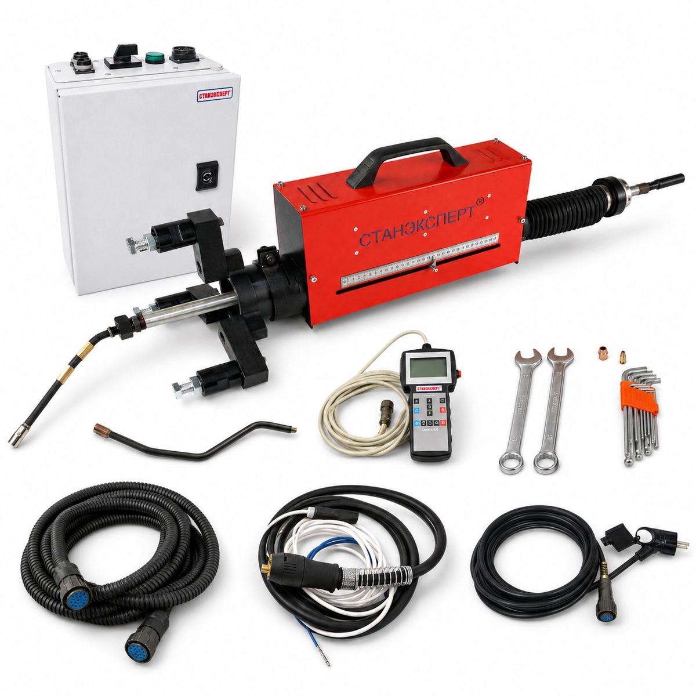
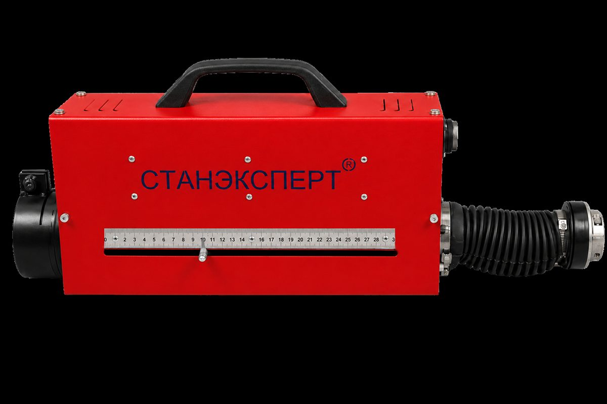

Наплавочный
МНС59 ЦПУ
364 390 ₽ с НДС
МНС59 ЦПУ позволяет выполнять внутреннюю наплавку в диапазоне от 25 до 1000 мм и наружную наплавку поверхностей диаметром от 100 до 1000 мм, без демонтажа крупногабаритной детали.